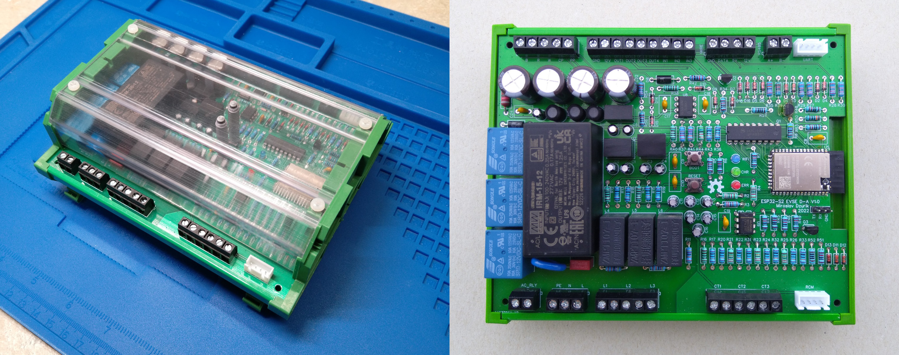
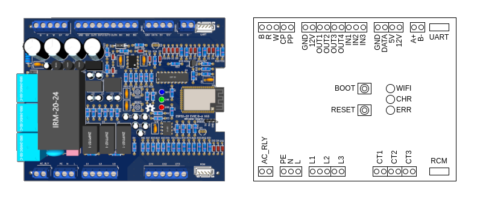

ESP32-S2 EVSE DIY Alpha
Overview~
The ESP32-S2 EVSE DIY Alpha is a fully featured, mains-side charging controller rather than a bare pilot-and-relay board. On a single PCB it brings together the J1772 / IEC 61851 signalling (control pilot and proximity pilot), a three-phase energy meter, residual-current monitoring with a hardware self-test, a motorized socket-lock driver, a 1-Wire temperature input, four auxiliary outputs with three inputs, and both RS-485 (Modbus) and UART serial buses. The design is published as open hardware under GPL-3.0 on EasyEDA / OSHWLab, where the schematic, PCB and bill of materials can be inspected, cloned, ordered or modified.
A board based on ESP32-S2 you can assemble yourself is ESP32-S2 EVSE DIY Alpha. Has onboard three phase energy meter, RS485, UART, 1WIRE, RCM, socket lock.

You can order the PCB from the EasyEDA project page, even assembled.

The dimensions of the board are 150x122 mm, designed to fit into the UM122 enclosure.
Beyond a bare-bones EVSE~
A minimal J1772 controller needs surprisingly little hardware: a microcontroller, a control-pilot circuit (one comparator and a handful of resistors to generate the PWM and read the vehicle’s response), a driver for the contactor relay, and a 12 V→3.3 V supply. That is enough to advertise a current limit and switch the contactor on and off – a working but blind charger. The ESP32-S2 EVSE DIY Alpha starts from that core and adds the parts that turn a switch into a charging station that measures, protects and integrates:
- Three-phase energy metering. Three current-transformer inputs (CT1–CT3, for 2000:1 clamps such as the SCT-013-000) and three mains-voltage taps (L1–L3) feed six dedicated ADC channels, so the board can report real power and accumulated energy instead of estimating it from the advertised current. It runs in dummy, current-only, or current-and-voltage modes and handles single- or three-phase installations. See Energy metering.
- Residual-current monitoring (RCM). A dedicated trip input and a hardware self-test line let the board detect AC and DC residual currents itself and verify the sensor at power-on. This is what allows the design to be paired with an ordinary, inexpensive Type-A RCD instead of requiring a costly Type-B device. See Residual-current monitor.
- Motorized socket lock. An H-bridge driver and a position-detection input operate a Type-2 socket-outlet actuator that retains the plug for the duration of a session (covered below and in Socket lock).
- Proximity pilot. A proximity input reads the resistor-coded current rating of a plugged-in cable in socket-outlet mode. See Proximity pilot.
- Temperature sensing. A 1-Wire bus for a DS18B20 sensor lets the firmware watch the board environment temperature and derate or stop charging if it climbs too high. Multiple DS18B20 sensors can be connected in parrallel alongside the one to be soldered onboard.
- Expansion I/O. Four switchable outputs (three low-side, one high-side), two digital inputs and one analog input bring contactor control, tariff or enable signals and indicators onto the board; they can be driven from Lua scripts for load management and automation. See Lua.
- Two serial buses. An RS-485 port with a 120 Ω terminator carries Modbus RTU (Modbus), while a separate UART (with a 5 V supply pin) drives accessories such as a Nextion touch panel or any AT Commands based integration.
- Wi-Fi, web UI and OTA. The ESP32-S2 provides the web interface, REST API and over-the-air firmware updates that a bare-bones controller would not have.
Supporting all of this at once is the reason the board is built around the ESP32-S2 rather than the classic ESP32. Counting the analog inputs – control pilot, proximity, three currents, three voltages and the auxiliary analog input – the design needs on the order of nine ADC channels. The original ESP32 cannot expose that many usable analog inputs while its Wi-Fi radio is active (its second ADC bank is unavailable during radio use), whereas the ESP32-S2 has enough ADC-capable pins to cover them all and still run Wi-Fi. The integrated meter, RCM and isolation are also why the board is comparatively large at 150x122 mm: there has to be room for the high-voltage section, the current and voltage front-ends, and proper screw terminals for field wiring.
Connections~
Buttons~
| Name | Usage | Note |
|---|---|---|
| BOOT | Activate WiFi AP, during restart enter flashing mode | GPIO0 pin on ESP |
| RESET | Restart controller | EN pin ESP |
LEDs~
| Name | Usage | Color | Description |
|---|---|---|---|
| WIFI | WiFi | Blue | on - connected to WiFi flashing (on/off 100/900ms) - Started WiFi AP flashing (on/off 1900/100ms) - WiFi AP has client connection |
| CHR | Charging | Green | flashing - vehicle connected but not charging on - vehicle charging |
| ERR | Error | Red | on - is in error state (E) flashing - is in not available state (F) |
Terminals~
| Name | Usage | Note |
|---|---|---|
| B | Detection of the locking actuator | |
| R | Control of the locking actuator | |
| W | Control of the locking actuator | |
| CP | Control Pilot | |
| PP | Proximity Plug | |
| GND | Ground | System ground |
| 12V | 12V | |
| OUT1 | Low side output 1 | |
| OUT2 | Low side output 2 | |
| OUT3 | Low side output 3 | |
| OUT4 | High side output 1 | |
| IN1 | Digital input 1 | |
| IN2 | Digital input 2 | |
| IN3 | Analog input | |
| GND | Ground | System ground |
| DATA | 1-Wire bus | For external temperature sensor DS18B20 |
| 5V | 5V power supply | |
| 12V | 12V power supply | |
| A+ | RS-485 A+ pin | RS-485 bus with 120Ω terminator resistor |
| B- | RS-485 B- pin | RS-485 bus with 120Ω terminator resistor |
| UART | UART serial bus (with 5V power supply) | RX and TX at 3.3V level directly on ESP |
| AR_RLY | Relay output for AC contactor | |
| PE | Protective Earth | Connected to system ground |
| N | Neutral | Neutral conductor, power grid |
| L | Line | Phase input, for powering the board |
| L1 | Energy meter L1 voltage input | |
| L2 | Energy meter L2 voltage input | |
| L3 | Energy meter L3 voltage input | |
| CT1 | Energy meter L1 current transformer | |
| CT2 | Energy meter L2 current transformer | |
| CT3 | Energy meter L3 current transformer | |
| RCM | Residual current monitor | (currently supported models are RCM14-01, RCM14-03) |
Socket lock~
This board can drive a motorized socket lock actuator, used in socket-outlet mode to retain the plug for the duration of a charging session. Three terminals are dedicated to it:
| Terminal | Role |
|---|---|
| R | Actuator control line A |
| W | Actuator control line B |
| B | Position detection input |
R and W are the two control lines of an H-bridge that drives the actuator motor. To lock, the board energizes the pair in one polarity for the operating time; to unlock, it energizes them in the opposite polarity. After each move both lines are released, so the motor is only powered for the brief operating window rather than held.
B is the detection input. To read the current position the board drives R and W to the same level – the motor sees no voltage difference and does not move – and reads the feedback contact on B after a short delay. A detection polarity setting selects whether the locked position reads high or low, so the same firmware works with actuators of either contact sense.
On this board the detection is read 1000 ms after a move, and the minimum break time between operations is 1000 ms (from its board.yaml). The operating time, break time, retry count and detection polarity are adjustable in settings. The lock engages automatically when a vehicle is plugged in and releases when it is unplugged or the charger faults; charging will not begin until the lock has confirmed the locked position, and a lock or unlock failure puts the charger into the error state.
The corresponding board.yaml block is:
socketLock:
gpios: [20, 19] # control lines on terminals R and W
detectionGpio: 34 # detection input on terminal B
detectionDelay: 1000
minBreakTime: 1000
For the full description of the locking sequence, detection, retries and fault handling, see Socket lock. The wiring of a socket outlet with its actuator is shown in With socket outlet below.
Connections~
Notes about the onboard enegry meter functionality:
- L1, L2, L3 connections onboard charging voltage meter, they are optional. Use
30mAfuses to connect them to the lines. - CT1, CT2, CT3 connections for current transformers measuring charging current, they are optional. Can be used any with ratio 2000/1 (for example:
DL-CT08CL5orSCT-013-000). - Remember to check Energy meter checkbox Three phases in case your installation is relying on a three-phase connection.
Residual Current Monitor is optional, if is not available it must be disabled in settings.
With socket outlet~


Set Max charging current to the value of the circuit breaker that protects the EVSE.
With fixed cable~


Set Max charging current to the lower value of the circuit breaker that protects the EVSE or cable maximum current.
CAUTION
Working with high voltage is dangerous. Always follow local laws and regulations regarding high voltage work. If you are unsure about the rules in your country, consult a licensed electrician for more information.